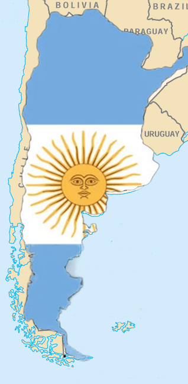
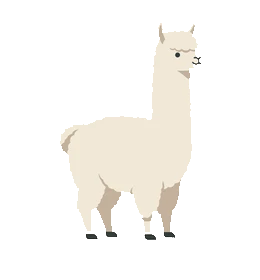
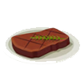
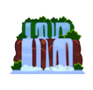

Аргентина
Страна солнца, гаучи и восхитительной выпечки!
Климатические зоны Аргентины
Кликните на цветную точку, чтобы узнать о климате!





Страна солнца, гаучи и восхитительной выпечки!
Кликните на цветную точку, чтобы узнать о климате!



